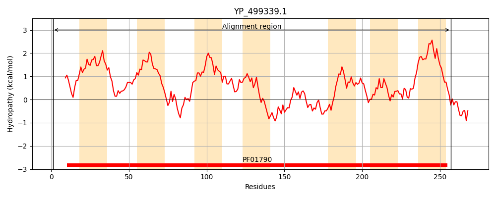
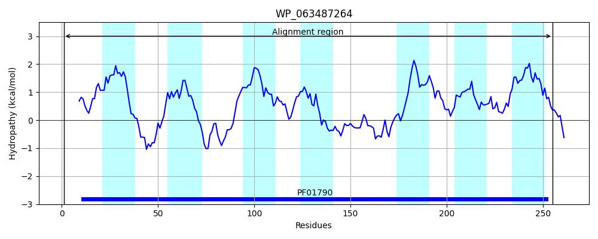
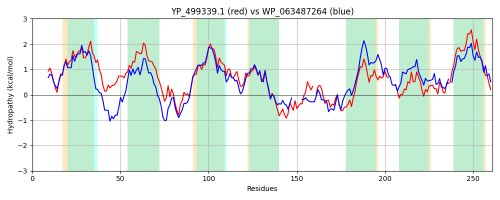

Hit Accession: WP_063487264
Hit TCID: 9.B.330.4.2
Hit Description: gnl|BL_ORD_ID|21300 gnl|TC-DB|WP_063487264.1|9.B.330.4.2 prolipoprotein diacylglyceryl transferase [Lactobacillus plantarum]
Mach Len: 261
e:0.000000
Query TMS Count : 7
Hit TMS Count: 7
TMS-Overlap Score: 5.850000
Predicted Substrates:None
BLAST Alignment:
Score: 564 , Bit scores: 221 bits, E-value: 6.5e-72, Alignment length: 261, Percentage identity: 43
Query: 1 MGIVFNYIDPVAFNLGPLSVRWYGIIIAVGILLGYFVAQRALVKAGLHKDTLVDIIFYSALFGFIAARIYFVIFQWPYYAENPSEIIKIWHGGIAIHGGLIGGFIAGVIVCKVKNLNPFQIGDIVAPSIILAQGIGRWGNFMNHEAHGGSVSRAFLEQLH-LPNFIIENMYINGQYYHPTFLYESIWDVAGFIILVNIRKHLK---LGETFFLYLTWYSIGRFFIEGLRTDSLMLTSNIRVAQLVSILLILISISLIVYRR 257
M + + ID VA LGPL +RWY +II G+L+G ++A + + L D + D + ++ F I R Y+V+F+W YY ++P+EII +W GG AI+GGLI G I +I K +NP + D+ P ++L Q IGRWGNF+N EA+G A L+ LP + M+I+G Y PTFL+ES+ + GFII++ +R +K GE F YL WY + RF IEG+RTDSLM+ S +R++QL+S+ L + + I+YRR
Sbjct: 1 MDLALSSIDTVALRLGPLRIRWYALIIVAGMLIGIWLASKEAPRRHLTTDDITDFMIWAVPFSLIGVRTYYVLFEWGYYKQHPNEIIALWEGGGAIYGGLIAGTIVLLIFSYRKKINPLDLLDVAIPGVLLGQSIGRWGNFINQEAYG-----AITTNLNWLPEVFRKQMFISGSYRQPTFLFESMGTLLGFIIVILLRHRIKGLLRGEIFGFYLVWYGLLRFVIEGMRTDSLMVGS-VRISQLLSLGLFITGLIFILYRR 255 | Protein Hydropathy Plots: |
|---|
|  |  |
Pairwise Alignment-Hydropathy Plot:
|
|---|
|  |